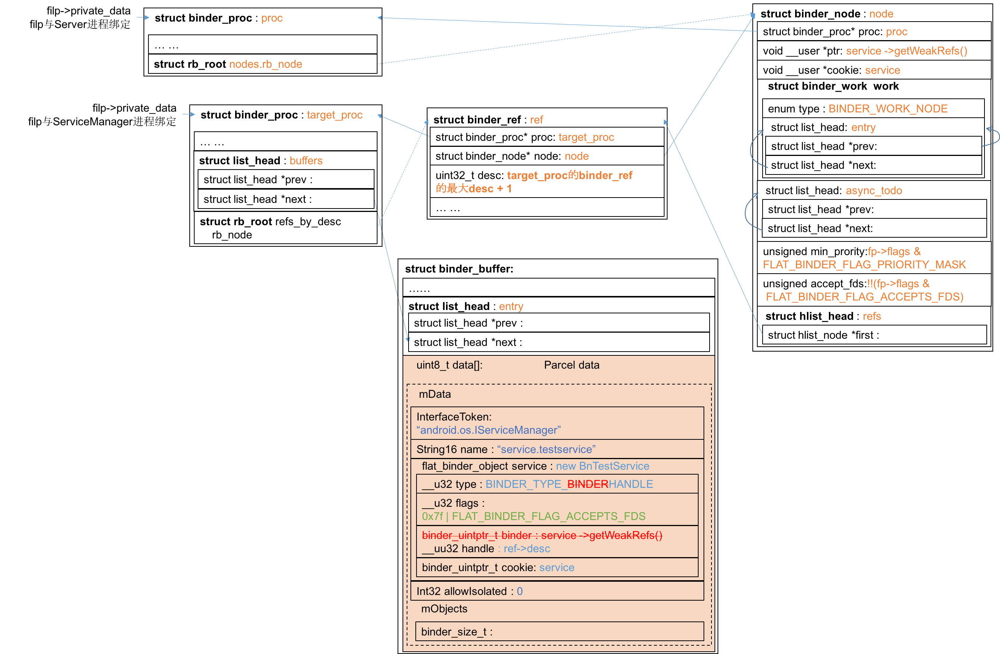
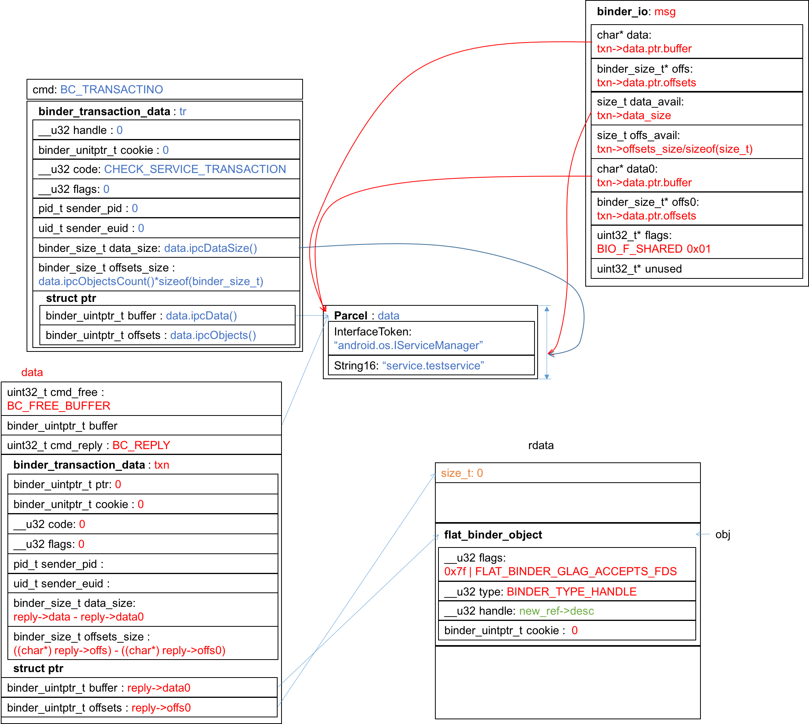
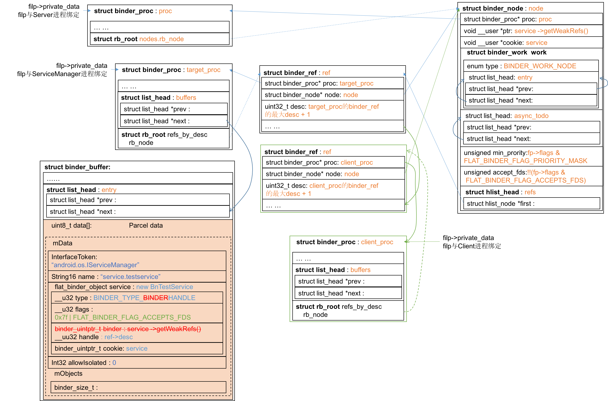

Binder学习笔记（十三）—— 小结
驱动层为什么要篡改binder_buffer内的数据？
先给出这张图：
上图中标红的部分需要重点考虑，为什么驱动层要篡改这两个字段呢？我们结合前面的文章或许可以找出端倪。在Binder学习笔记（七）—— ServiceManager如何响应addService请求 ？一文中其实留下了挺多疑问。
server端调用addService(…)向ServiceManager注册该Service，ServiceManager保存Service的(name, binder)二元对以备后用，但其中最不可理解的是在函数bio_get_ref(struct binder_io *bio)中判断如果Service的type==BINDER_TYPE_HANDLE，binder为0。这个疑团现在就可以打开了：因为ServiceManager收到的service的type不可能为BINDER_TYPE_BINDER！
尽管在Server端组织的数据结构中type=BINDER_TYPE_BINDER，但在驱动层被上图的红色部分过了一手，把它改成了BINDER_TYPE_HANDLE。
也就是说在由Server端发给ServiceManager时，binder在Server一端是实体，到了ServiceManager一端就要变成引用，因为实体并不在自己的进程空间。同理，我推断当Client端调用Server端的Binder服务时，Client端使用的是引用，到了Server端会变成实体。我们看binder_transaction(...)函数中case BINDER_TYPE_HANDLE和case BINDER_TYPE_WEAK_HANDLE的代码，确实是有这样的修改。
flat_binder_object的binder字段和handle字段公用一个联合，在实体端使用binder，在引用端使用handle，在驱动层完成binder<–>handle的转换，使之对实体/引用端透明，这是驱动层的职责。那么为什么要有这种转换呢？这个字段的作用就是为了提领到binder，使用一个唯一标识不就行了么？问题就在于这个“唯一标识”不好搞，binder是跨进程的调用，所以这个“唯一标识”必须要系统全局唯一。binder在Server端就是BnService的影子对象的地址，这个地址在Server进程中是全局唯一的，但是到了ServiceManager一端却不唯一，为了确保它在这一端的唯一性，驱动为它生成了在ServiceManager中的唯一id，即handle，也即ref->desc，可是它仅在ServiceManager内唯一。
于是驱动层需要做转化，确保在“阴阳两界各自唯一，到了对端就不唯一”的两个id之间建立关联，使得一端向另一端的binder喊话时，对端对应的binder能收到。
再看Server端是如何组织addService数据的
在Binder学习笔记（六）—— binder服务端是如何组织addService数据的？中我们主要讨论了应用层行为和数据结构，在本节中我们重点看驱动层。
回顾一下Server端代码：1
2
3
4
5
6
7
8int main() {
sp < ProcessState > proc(ProcessState::self());
sp < IServiceManager > sm = defaultServiceManager();
sm->addService(String16("service.testservice"), new BnTestService());
ProcessState::self()->startThreadPool();
IPCThreadState::self()->joinThreadPool();
return 0;
}
第3行的defaultServiceManager()我们在Binder学习笔记（二）—— defaultServiceManager()返回了什么？中讨论过。在ProcessState的构造函数的初始化列表中，打开了文件/dev/binder，在构造函数体中完成了映射。
打开文件/dev/binder，会执行binder_open，为Server进程创建一个文件对象struct file（定义在kernel/goldfish/include/linux/fs.h:978），在binder_open(…)中会为该结构体创建一个binder_proc对象，并把文件对象的private_data成员指向该binder_proc对象。
映射文件/dev/binder，会会执行binder_mmap，为proc申请binder_buffer。
addService会执行binder_transaction，为addService事务创建struct binder_transaction对象t，并将t挂到ServiceManager的binder_buffer::t下，将来自用户空间的数据拷贝到ServiceManager的binder_buffer中；再为Server创建binder_node，挂到Server的proc->nodes.rb_node中，为ServiceManager创建binder_ref，挂到ServiceManager的proc->refs_by_desc.rb_node中。由于binder_node和binder_ref表示的是同一个binder，因此binder_ref::node与binder_node::first完成互指。
生成的数据结构如下图：

根据Binder学习笔记（七）—— ServiceManager如何响应addService请求 ？可知：ServiceManager会把Service的name和handle保存下来，串到链表svclist中。
再看ServiceManager是如何响应checkService请求的
当Client请求Service的时候，ServiceManager是怎么根据前面保存的handle关联到Service的，Client又是怎么据此调用到Service的函数？回答了这两个问题，binder的通道就算打通啦:)
回顾Binder学习笔记（四）—— ServiceManager如何响应checkService请求，来看这幅图：
客户端请求Service时带的是Service的name，在ServiceManager根据name在svclist中查找到handle，然后组织成rdata数据返回。看！它的type是BINDER_TYPE_HANDLE，驱动层是不是要做点什么？来看看binder_transaction(…)的case BINDER_TYPE_HANDLE和case BINDER_TYPE_WEAK_HANDLE部分：1
2
3
4
5
6
7
8
9
10
11
12
13
14
15
16
17
18
19
20
21
22case BINDER_TYPE_HANDLE:
case BINDER_TYPE_WEAK_HANDLE: {
struct binder_ref *ref = binder_get_ref(proc, fp->handle);
... ...
if (ref->node->proc == target_proc) {
if (fp->type == BINDER_TYPE_HANDLE)
fp->type = BINDER_TYPE_BINDER;
else
fp->type = BINDER_TYPE_WEAK_BINDER;
fp->binder = ref->node->ptr;
fp->cookie = ref->node->cookie;
binder_inc_node(ref->node, fp->type == BINDER_TYPE_BINDER, 0, NULL);
... ...
} else {
struct binder_ref *new_ref;
new_ref = binder_get_ref_for_node(target_proc, ref->node);
... ...
fp->handle = new_ref->desc;
binder_inc_ref(new_ref, fp->type == BINDER_TYPE_HANDLE, NULL);
... ...
}
} break;
这段代码由ServiceManager执行，发送给Client，因此其中的proc属于ServiceManager，target_proc属于Client。
上一节分析过，当Server端调用addService后，驱动会在ServiceManager的refs_by_desc红黑树中挂上Service的binder_ref节点；在Server的nodes红黑树中挂上Service的binder_node节点。
因此，在上面代码#3这一行，在ServiceManager的refs_by_desc红黑树上可以找到到handle对应的binder_ref节点。#5行中，ref->node是binder的实体，该实体是由Server创建的，因此ref->node->proc属于Server，而target_proc属于Client，因此#5非真。
接下来在Client的proc中为Service的binder_node创建binder_ref，其desc在Client内唯一，把handle改为此desc。修改之后的数据结构图如下，我把被驱动层修改的内容标绿了：

下图是驱动层为Client创建的binder_ref以及它与binder_node之间的关系，我用绿色表示新增加的这部分关系，虚线表示并非直接指针指过来，而是通过红黑树串入的节点：

呵呵，好复杂的三角关系！乱么？正当我以为在我内心里已经无比清晰，正要势如破竹乘胜追击，甚至要提前祝贺攻下binder的时候，我被接下来的问题整懵了。接下来的主题应该是“再看客户端是如何组织Test()请求的”，可是当我分析Binder学习笔记（八）—— 客户端如何组织Test()请求 ？这一篇中的最后那张图：
才发现data的部分根本没有flat_binder_object，根据binder_transaction(…)，也就不走什么case语句了，生成了binder_transaction就完了？谁来负责把这个事务交到Server端继续执行呢？原来我还有一半的路程要走，当初穿越驱动层的时候只分析到binder_ioctl(...)调用binder_thread_write(...)，后面还有一半是binder_thread_read(...)。看来小结做得还为时过早，后面还有峰回路转，后半部分留待以后的章节再搞吧。